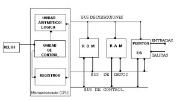

El Ciclo Instrucción cuenta con dos fases, la primera es la obtención (búsqueda) y la segunda es la fase de ejecución:
Ciclo Fetch-Decode-Execute.
Un ciclo de instrucción (también llamado ciclo de fetch-and-execute o ciclo de fetch-decode-execute en inglés) es el período que tarda la unidad central de procesamiento (CPU) en ejecutar una instrucción de lenguaje máquina.
Comprende una secuencia de acciones determinada que debe llevar a cabo el CPU para ejecutar cada instrucción en un programa. Cada instrucción del juego de instrucciones de un CPU puede requerir diferente número de ciclos de instrucción para su ejecución. Un ciclo de instrucción está formado por uno o más ciclos máquina.
Para que cualquier sistema de proceso de datos basado en microprocesador (por ejemplo un ordenador o computadora personal) o microcontrolador (por ejemplo un reproductor de MP3) realice una tarea (programa) primero debe buscar cada instrucción en la memoria principal y luego ejecutarla.
Segmentación de instrucciones.
El objetivo de la segmentación es ejecutar simultáneamente diferentes etapas de distintas instrucciones, lo cual permite aumentar el rendimiento del procesador sin tener que hacer más rápidas todas las unidades del procesador (ALU, UC, buses, etc.) y sin tener que duplicarlas.
La división de la ejecución de una instrucción en diferentes etapas se debe realizar de tal manera que cada etapa tenga la misma duración, generalmente un ciclo de reloj.
Es necesario añadir registros para almacenar los resultados intermedios entre las diferentes etapas, de modo que la información generada en una etapa esté disponible para la etapa siguiente.
La segmentación es como una cadena de montaje. En cada etapa de la cadena se lleva a cabo una parte del trabajo total y cuando se acaba el trabajo de una etapa.
El producto pasa a la siguiente y así sucesivamente hasta llegar al final.
Si hay N etapas, se puede trabajar sobre N productos al mismo tiempo y, si la cadena está bien equilibrada, saldrá un producto acabado en el tiempo que se tarda en llevar a cabo una de las etapas. De esta manera, no se reduce el tiempo que se tarda en hacer un producto, sino que se reduce el tiempo total necesario para hacer una determinada cantidad de productos porque las operaciones de cada etapa se efectúan simultáneamente.
Conjunto de instrucciones.
La segmentación de instrucciones es similar al uso de una cadena de montaje en una fábrica de manufacturación. En las cadenas de montaje, el producto pasa a través de varias etapas de producción antes de tener el producto terminado. Cada etapa o segmento de la cadena está especializada en un área específica de la línea de producción y lleva a cabo siempre la misma actividad. Esta tecnología es aplicada en el diseño de procesadores eficientes.
A estos procesadores se les conoce como pipeline processors. Estos están compuestos por una lista de segmentos lineales y secuenciales en donde cada segmento lleva a cabo una tarea o un grupo de tareas computacionales. Los datos que provienen del exterior se introducen en el sistema para ser procesados.
La computadora realiza operaciones con los datos que tiene almacenados en memoria, produce nuevos datos o información para uso externo.
Las arquitecturas y los conjuntos de instrucciones se pueden clasificar considerando aspectos posibles:
Almacenamiento de operandos en la CPU: dónde se ubican los operandos aparte de la memoria.
Número de operandos explícitos por instrucción: cuántos operandos se expresan en forma explícita en una instrucción típica.
Como son 0,1,2,3.
Posición del operando: Todos en los registros internos de la CPU. Cómo se especifica la dirección de memoria (modos de direccionamiento disponible.
Operaciones: Qué operaciones están disponibles en el conjunto de instrucciones.
Tipo y tamaño de operandos y cómo se especifican.
